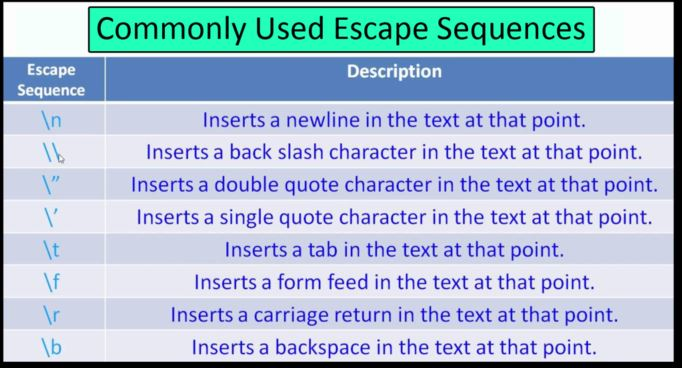

Comments are used to write something which the programmer does not want to execute. Comments can be written to mark author name, date when the program is written, adding notes
for your future self, etc.
• Comments are used to make the code more understandable for the programmer.
• The Interpreter does not execute comments.
There are two types of comments in Python Language -:
• Single Line Comment
• Multi-Line Comment
Single Line Comment: Single Line comments are the comments which are written in a single line, i.e., they occupy the space of a single line.
• We use # (hash/pound to write single-line comments).
• E.g., the below program depicts the usage of comments.
import os
#This is a comment
print("Main code started")
#Now I will write my code here:
print(os.listdir())
Multi-Line Comment: Multi-Line comments are the comments which are created by using multiple lines, i.e., they occupy more than one line in a program.
• We use ' ' '….. Comment ….' ' ' for writing multi-line comments in Python (Use lines enclosed with three quotes for writing multi-line comments). An example of a
multi-line comment is shown below:
import os
'''This is a comment
Author: Siddharth
Date: 30 November 2020
Multi-line comment ends here
'''
print("Main code started")
#Now I will write my code here:
print(os.listdir())
Python Print Statement:
print() is a function in Python that allows us to display whatever is written inside it. In case an operation is supplied to print, the value of the expression after the
evaluation is printed on the screen. For example,
import os
import flask
# print statement for printing strings
print("Sidd is a programmer")
# Print statement with a literal
print(1+87)
#This will print "Sidd is a programmer" and 88 on the screen respectively!
end: end argument allows us to put something at the end of the line after it is printed. In simple words, it allows us to continue the line with " " or ',' or anything we
put inside these quotes of the end. It simply joins two different print statements using some string or even by space. Example:
import os
import flask
# print statement for printing strings
print("Sidd is a programmer", end="**")
# Print statement with a literal
print(1+87)
#This will print "Sidd is a programmer**88" on the screen
Escape Sequences:
• An Escape Sequence character in Python is a sequence of characters that represents a single character.
• It doesn't represent itself when used inside string literal or character.
• It is composed of two or more characters starting with backslash \ but acts as a single character. Example \n depicts a new line character.
Some more examples of escape sequence characters are shown below:

Program
"""
This is a
Multiline Comment
"""
"""
This is a comment
"""
# print("This is Siddharth","You're on TheTechGuy")
# print("next line")
# print("C:\'narry")
print("Rohan is \n good boy \t1") #comment after statement